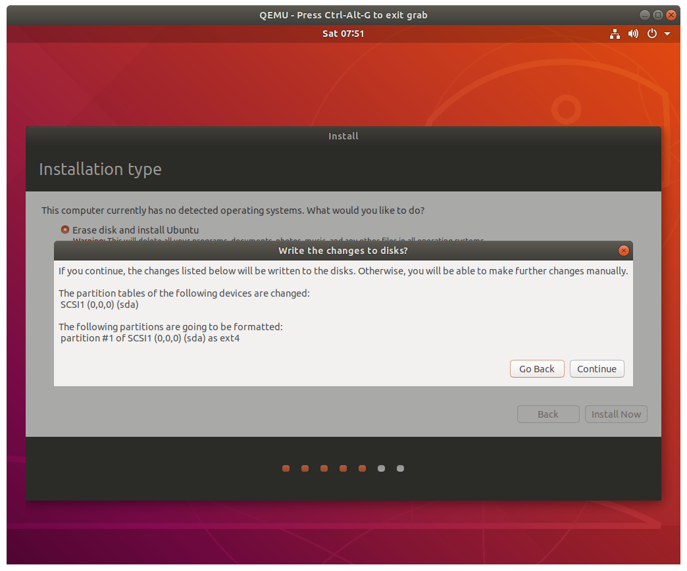
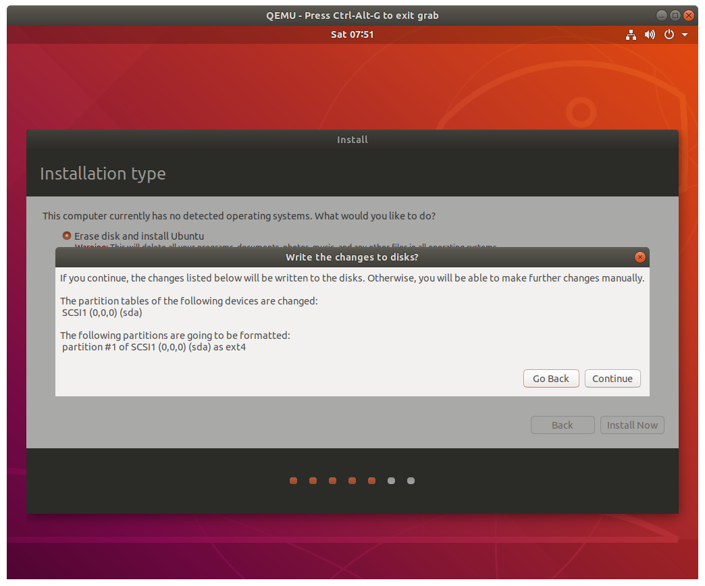

Setting up ILLIXR in QEMU
Build QEMU
Run ILLIXR/install_deps.sh and select yes when asked to install QEMU.
This will build QEMU and install it to /opt/ILLIXR.
Why build QEMU from source?
The version of QEMU available through package managers doesn't always ship with all
the options we need to run ILLIXR, so building QEMU from source is the best option.
This qemu installation will not conflict with existing qemu installs on your system.
Setup Ubuntu in the VM
Run ILLIXR/qemu/run.sh to download Ubuntu 18.04, create a virtual hard drive
(illixr.qcow2), and launch qemu from /opt/ILLIXR.
Your VM image will be created at ILLIXR/qemu/illixr.qcow2.
Ubuntu will be downloaded and saved at ILLIXR/qemu/ubuntu-18.04.5-desktop-amd64.iso.
You will be prompted to install Ubuntu; follow the instructions and install Ubuntu to the virtual hard drive.

Choose the "erase all" option and confirm:
 

Pick any account name and password you like.

Once Ubuntu is installed you will be asked to reboot.
Close qemu and then run ./run.sh again to boot into your brand new Ubuntu install!
Booting the VM
To launch the VM from now on, just use ILLIXR/qemu/run.sh.
This will boot from the Ubuntu image we created earlier (illixr.qcow2).
Once Ubuntu is installed, it is safe to delete ubuntu-18.04.5-desktop-amd64.iso.
Setting up the VM
Once inside the VM, set up and run ILLIXR as found on the Getting Started page.
Uninstalling
To delete your local VM, just delete ILLIXR/qemu/illixr.qcow2.
ILLIXR/qemu/ubuntu-18.04.5-desktop-amd64.iso can be deleted anytime you want after Ubuntu
is installed to your VM.
If you've deleted illixr.qcow2, you can run run.sh to recreate it and reinstall everything.